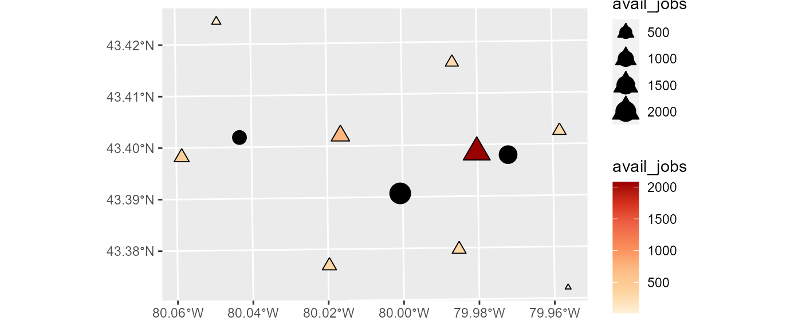
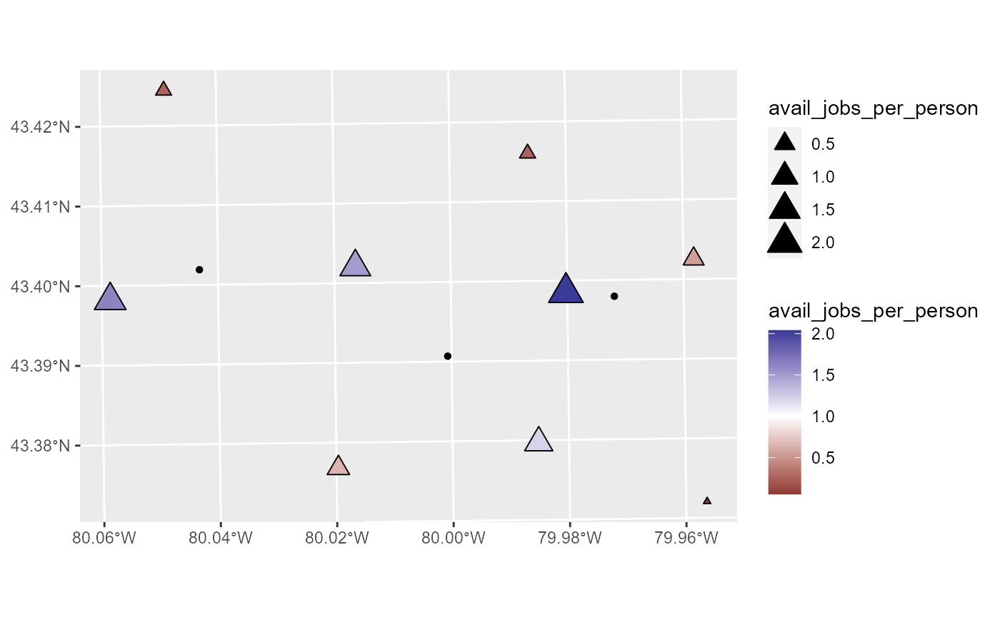

AccessPack-Spatial-Availability.Rmd
library(AccessPack)
library(dplyr)
#>
#> Attaching package: 'dplyr'
#> The following objects are masked from 'package:stats':
#>
#> filter, lag
#> The following objects are masked from 'package:base':
#>
#> intersect, setdiff, setequal, union
library(ggplot2)
library(sf)
#> Warning: package 'sf' was built under R version 4.1.2
#> Linking to GEOS 3.9.1, GDAL 3.2.1, PROJ 7.2.1dsds
Assign impedance function:
od_table <- od_table %>%
mutate(V_ij = sp_avail(.,
o_id = Origin,
d_id = Destination,
pop = Population,
opp = Jobs,
f = f))Verify that the sum of all jobs allocated is consistent with the total number of jobs:
sum(od_table$V_ij)
#> [1] 4500The total number of jobs is preserved.
Aggregate available jobs by origin:
availability <- od_table %>%
group_by(Origin) %>%
summarize(avail_jobs = sum(V_ij))
availability
#> # A tibble: 9 x 2
#> Origin avail_jobs
#> <fct> <dbl>
#> 1 Population 1 67.0
#> 2 Population 2 414.
#> 3 Population 3 336.
#> 4 Population 4 745.
#> 5 Population 5 2081.
#> 6 Population 6 270.
#> 7 Population 7 256.
#> 8 Population 8 316.
#> 9 Population 9 14.9Join the availability to the simulated_data:
Plot the availability estimates:
avail_jobs_plot <- ggplot() +
geom_sf(data = simulated_data %>%
filter(type == "population"),
aes(color = avail_jobs,
size = avail_jobs),
shape = 17) +
geom_sf(data = simulated_data %>%
filter(type == "population"),
aes(size = avail_jobs),
shape = 2) +
geom_sf(data = simulated_data %>%
filter(type == "jobs"),
aes(size = number,
shape = )) +
scale_color_distiller(palette = "OrRd",
direction = 1)
avail_jobs_plot
How do we interpret this? Accessibility is the number of jobs that can be reached at a given cost. Here, the total number of jobs is a constant. Population center 5 has the greatest availability, due to being a large population center that is moreover relatively close to jobs.
Since the total number of jobs is constant, we can calculate the available jobs per person:
simulated_data <- simulated_data %>%
mutate(avail_jobs_per_person = avail_jobs/number)Plot the availability per person:
avail_jobs_person_plot <- ggplot() +
geom_sf(data = simulated_data %>%
filter(type == "population"),
aes(color = avail_jobs_per_person,
size = avail_jobs_per_person),
shape = 17) +
geom_sf(data = simulated_data %>%
filter(type == "population"),
aes(size = avail_jobs_per_person),
shape = 2) +
geom_sf(data = simulated_data %>%
filter(type == "jobs"),
shape = 16) +
scale_color_gradient2(midpoint = 1)
avail_jobs_person_plot Some population centers have almost two jobs available per person, and others less than one job available per person. This does not mean that people are not taking some of the jobs. It means that controlling for the cost of reaching jobs, they are worse off than those with more jobs spatially available.